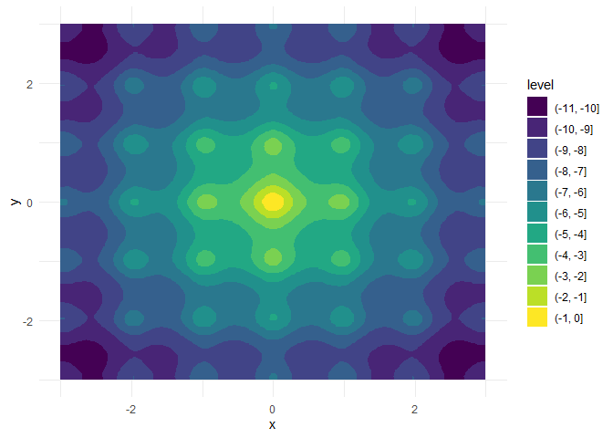

The optimizeR package
- provides an object-oriented framework for optimizer functions in R
- and offers some convenience for useRs when minimizing or maximizing.
❌ You won’t need the package if you…
- already know which optimizer you want to use and if you are happy with its constraints (e.g., only minimization over the first function argument possible),
- want to compare optimizers that are already covered by
{optimx}(Nash and Varadhan 2011) (they provide a framework to compare about 30 optimizers), - or search for new optimization algorithms (because this package does not implement any optimizer functions itself).
✅ But you might find the package useful if you want to…
- compare any optimizer function (also those not covered by
{optimx}or other frameworks; see the CRAN Task View: Optimization and Mathematical Programming (Schwendinger and Borchers 2023) for an overview of R optimizers), - have consistently named inputs and outputs across different optimizers (which is generally not the case),
- view optimizers as objects (which can be helpful when implementing packages that depend on optimization),
- use optimizers for both minimization and maximization,
- optimize over more than one function argument,
- measure computation time or set a time limit for long optimization tasks.
How to use the package?
The following demo is a bit artificial but showcases the package purpose. Let’s assume we want to
- maximize a function over two of its arguments,
- interrupt optimization if it exceeds 10 seconds,
- and compare the performance between the optimizers
stats::nlmandpracma::nelder_mead.
We can easily do this task with optimizeR:
1. Define the objective function
Let f : ℝ4 → ℝ with
f <- function(a, b, x, y) {
a * exp(-0.2 * sqrt(0.5 * (x^2 + y^2))) + exp(0.5 * (cos(2 * pi * x) + cos(2 * pi * y))) - exp(1) - b
}For a = b = 20, this is the inverted Ackley function with a global maximum in x = y = 0:

We want to keep a and b fixed here and optimize over x and y (which are also both single numeric values).
Two problems would occur if we would optimize f with say stats::nlm directly:
- there are two target arguments (
xandy) and - the position of the target argument is not in the first place.
Both artifacts are not allowed by stats::nlm and most of other available optimizers, but supported by optimizeR. We just have to define an objective object which we later can pass to the optimizers:
objective <- Objective$new(
objective = f, # f is our objective function
target = c("x", "y"), # x and y are the target arguments
npar = c(1, 1), # the target arguments have both a length of 1
"a" = 20,
"b" = 20 # a and b have fixed values
)2. Create the optimizer objects
Now that we have defined the objective function, let’s define our optimizer objects. For stats::nlm, this is a one-liner:
nlm <- Optimizer$new(which = "stats::nlm")The optimizeR package provides a dictionary of optimizers, that can be directly selected via the which argument. For an overview of available optimizers, see:
optimizer_dictionary
#> <Dictionary> optimizer algorithms
#> Keys:
#> - lbfgsb3c::lbfgsb3c
#> - stats::nlm
#> - stats::nlminb
#> - stats::optim
#> - ucminf::ucminfOptimizers that are implemented in packages which are not installed yet are only shown here after you install the required packages (for instance using the convenience function install_optimizer_packages()).
But in fact any optimizer that is not contained in the dictionary can be put into the optimizeR framework by setting which = "custom" first…
nelder_mead <- Optimizer$new(which = "custom")
#> Please use method `$definition()` next to define a custom optimizer.… and using the $definition() method next:
nelder_mead$definition(
algorithm = pracma::nelder_mead, # the optimization function
arg_objective = "fn", # the argument name for the objective function
arg_initial = "x0", # the argument name for the initial values
out_value = "fmin", # the element for the optimal function value in the output
out_parameter = "xmin", # the element for the optimal parameters in the output
direction = "min" # the optimizer minimizes
)3. Set a time limit
Each optimizer object has a field called $seconds which equals Inf by default. You can optionally set a different, single numeric value here to set a time limit in seconds for the optimization:
nlm$seconds <- 10
nelder_mead$seconds <- 10Note that not everything (especially compiled C code) can technically be timed out, see the help site help("withTimeout", package = "R.utils") for more details.
4. Maximize the objective function
Each optimizer object has the two methods $maximize() and $minimize() for function maximization or minimization, respectively. Both methods require values for the two arguments
-
objective(either an objective object as defined above or just a function) and -
initial(an initial parameter vector from where the optimizer should start)
and optionally accepts additional arguments to be passed to the optimizer or the objective function.
nlm$maximize(objective = objective, initial = c(3, 3))
#> $value
#> [1] -6.559645
#>
#> $parameter
#> [1] 1.974451 1.974451
#>
#> $seconds
#> [1] 0.007139921
#>
#> $initial
#> [1] 3 3
#>
#> $error
#> [1] FALSE
#>
#> $gradient
#> [1] 5.577962e-08 5.577962e-08
#>
#> $code
#> [1] 1
#>
#> $iterations
#> [1] 6
nelder_mead$maximize(objective = objective, initial = c(3, 3))
#> $value
#> [1] 0
#>
#> $parameter
#> [1] 0 0
#>
#> $seconds
#> [1] 0.003467083
#>
#> $initial
#> [1] 3 3
#>
#> $error
#> [1] FALSE
#>
#> $count
#> [1] 105
#>
#> $convergence
#> [1] 0
#>
#> $info
#> $info$solver
#> [1] "Nelder-Mead"
#>
#> $info$restarts
#> [1] 0Note that
the inputs for the objective function and initial parameter values are named consistently across optimizers,
the output values for the optimal parameter vector and the maximimum function value are also named consistently across optimizers,
the output contains the initial parameter values and the optimization time in seconds and additionally other optimizer-specific elements,
pracma::nelder_meadoutperformsstats::nlmhere both in terms of optimization time and convergence to the global maximum.
How to get the access?
You can install the released package version from CRAN with:
install.packages("optimizeR")Then load the package via library("optimizeR") and you should be ready to go.
Roadmap
The following steps to further improve the package are currently on our agenda:
The package already provides a dictionary that stores optimizers together with information about names of their inputs and outputs (see the
optimizer_dictionaryobject). We want to extend this dictionary with more optimizers that are commonly used.We want to use alias for optimizers in the dictionary that group optimizers into classes (such as “unconstrained optimization”, “constrained Optimization”, “direct search”, “Newton-type” etc.). This would help to find alternative optimizers for a given task.
We want to implement a
$summary()method for an optimizer object that gives an overview of the optimizer, its arguments, and its properties.
Getting in touch
You have a question, found a bug, request a feature, want to give feedback, or like to contribute? It would be great to hear from you, please file an issue on GitHub. 😊